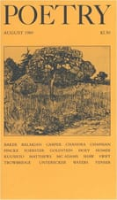

How easily happiness begins by
dicing onions. A lump of sweet butter
slithers and swirls across the floor
of the sauté pan, especially if its
errant path crosses a tiny slick
of olive oil. Then a tumble of onions.
This could mean soup or risotto
or chutney (from the Sanskrit
chatni, to lick). Slowly the onions
go limp and then nacreous
and then what cookbooks call clear,
though if they were eyes you could see
clearly the cataracts in them.
It’s true it can make you weep
to peel them, to unfurl and to tease
from the taut ball first the brittle,
caramel-colored and decrepit
papery outside layer, the least
recent the reticent onion
wrapped around its growing body,
for there’s nothing to an onion
but skin, and it’s true you can go on
weeping as you go on in, through
the moist middle skins, the sweetest
and thickest, and you can go on
in to the core, to the bud-like,
acrid, fibrous skins densely
clustered there, stalky and in-
complete, and these are the most
pungent, like the nuggets of nightmare
and rage and murmury animal
comfort that infant humans secrete.
This is the best domestic perfume.
You sit down to eat with a rumor
of onions still on your twice-washed
hands and lift to your mouth a hint
of a story about loam and usual
endurance. It’s there when you clean up
and rinse the wine glasses and make
a joke, and you leave the minutest
whiff of it on the light switch,
later, when you climb the stairs.